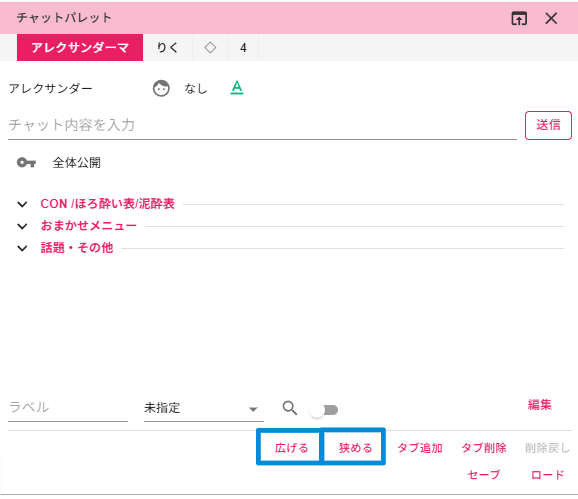
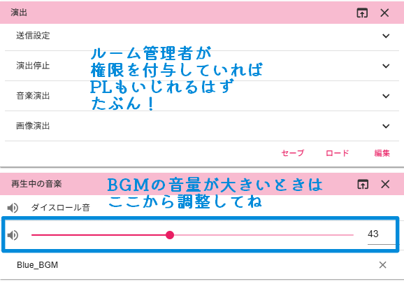

基本の画面
ヘッダーとチャット画面
画面の切り替えについてはこっち
画像のアップロード
・「ルーム専用フォルダにアップロード」を選ぶと
そのルームでだけ使えるフォルダにアップロードします
OFFのままだとtekeyのどこのルームでも使えるフォルダに
アップロードします
・「タグ」は未設定でもOK
自分が以降画像を探しやすくなるよう
分類するためのものです
サイドバー
サイドバー上部
薄いピンクの部分（画像だと「ステータステーブル」と書いてある場所）を掴むと他のウィンドウと上下の位置を入れ替えられます
※自分の画面のみに反映
ステータステーブル
主にコマの記載の情報が確認できます
右上の「︙」から値の最大値の表示もできます
※「名前」や「SAN」などの横幅の広さの変更や最大値の表示は自分のみに反映、入力されている値の変更は全員に反映

チャットパレット
概要はこちら
ウィンドウの縦幅を広げたり狭めたり
タブの追加削除もできます
※自分の画面のみに反映
メモ
長い情報はここにメモしておけます。
フォルダも作れるので嵩張らせずにたくさん書けます
ハウスルール等を記載しているケースもあり
ルームにいる誰でも追加することができるのでその卓のGMのルールに則って使用
※全員の画面に反映、公開範囲が「自分のみ」のメモは自分だけ、公開範囲を指定しているメモはその公開範囲だけに反映
フリーテーブル
誰が発狂してるか～とか持ち物何持ってるか～など
わりとフリーダムにまとめておけます
※カラムの横幅の広さ以外の変更は他の人にも反映されます

演出
BGMを流したりするときに使います。
ルーム管理者以外は権限付与されていない場合は使用不可
※ここで音楽を流したりすると全員に反映されます
再生中の音楽
流れているBGMの音量を調整できます。
BGMの✖ボタンを押すとBGM自体が消えます。
また、「再生中の音楽」ウィンドウを消すと音楽が流れなくなります
※このウィンドウ内の操作は自分だけに反映